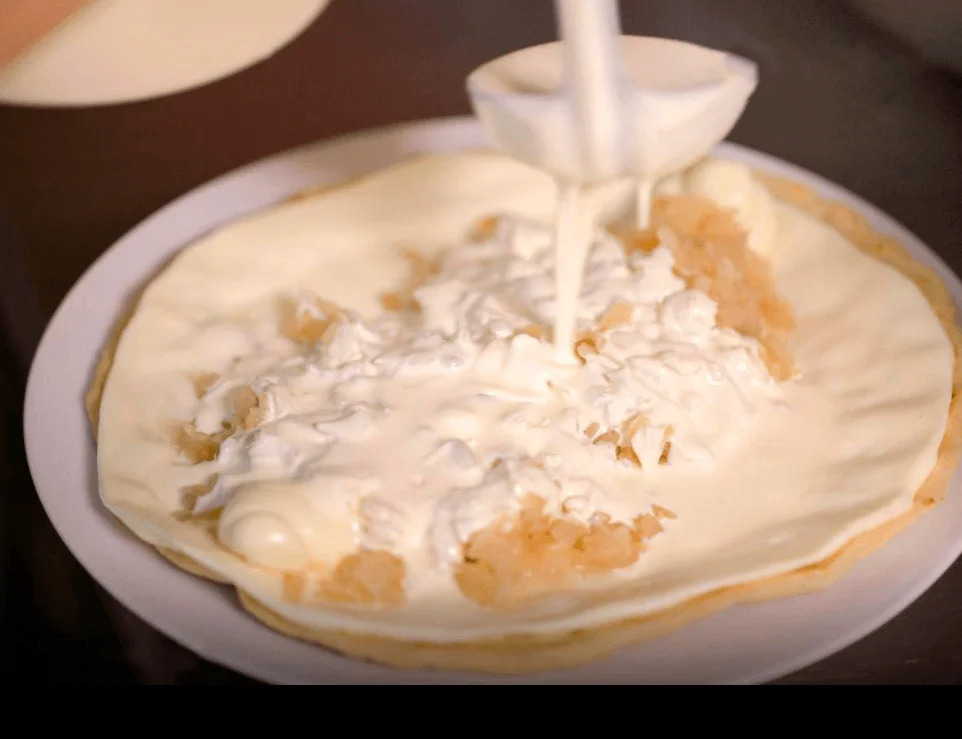

Quesillo
Quesillo is a traditional Nicaraguan cheese dish made with fresh cheese and served with a variety of accompaniments.

Description:
Quesillo is a delicious and simple cheese dish that is a staple in Nicaraguan cuisine.
It is often served as a snack or appetizer and is known for its creamy texture and mild
flavor.
Ingredients:
- 1 cup of fresh cheese (queso fresco)
- 1 small onion, chopped
- 2 tablespoons of vegetable oil
- Salt and pepper to taste
Instructions:
- In a separate pan, heat the vegetable oil over medium heat. Add the chopped onion and sauté until soft.
- Add the fresh cheese to the pan. Stir gently until the cheese is warm and slightly melted.
- Season with salt and pepper to taste. Cook for an additional 5 minutes, stirring occasionally.
- Serve hot and enjoy your Quesillo!
Go to Home